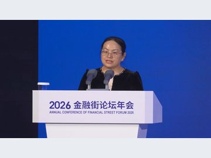

05
人行广东省分行：广东每10元新增企业贷款，有超6元流向民企
近期，中国人民银行进一步调整完善了多项货币政策工具，增加支农支小再贷款额度5000亿元，其中民营企业再贷款额度增加3000亿元。

内需是拉动经济增长的主动力和稳定锚。国家发展改革委近日举办的新闻发布会介绍，将会同有关部门，以更大力度、更实举措有效扩大内需，重点从三方面发力。
中央财政支持中央金融企业（以下简称“金融央企”）补充资本迎来新进展。日前，中国太平保险集团有限责任公司（以下简称“中国太平集团”）披露…
2026 年前三季度广东省金融运行呈现社会融资规模稳步增长、直接融资比重显著提升、信贷资金精准流向重点领域及“气候贷”等创新产品有效落地的良好态势。
近期，中国人民银行进一步调整完善了多项货币政策工具，增加支农支小再贷款额度5000亿元，其中民营企业再贷款额度增加3000亿元。
国家金融监督管理总局普惠金融司副司长王清容表示，近年来，金融监管总局联合有关部门就民营企业金融服务印发了多项政策性、综合性文件，并就尽职免责出台了专门制度…

10月21日，辽阳市最低气温已降至零下，但位于辽阳县兴隆镇的辽宁博仕佶镁新材料科技有限公司年产55万吨镁质功能新材料项目（一期）施工现场依旧热潮涌动…

总投资3亿元的辽宁淞杉化学环保油墨项目正式开工建设。项目落户康平县沈阳生物化工产业园，将有效补齐区域高端精细化工产业短板，持续完善园区新材料产业链条。

业内普遍认为，研究切换公开市场操作主力品种，是货币政策制度框架进一步改革完善的延续，不同于通常讲的货币政策降息加息。

此前，资金面宽松，DR001处在1.26%附近的低位，叠加10月19日金融街论坛释放政策利率“换锚”信号，共同催动一轮债牛。